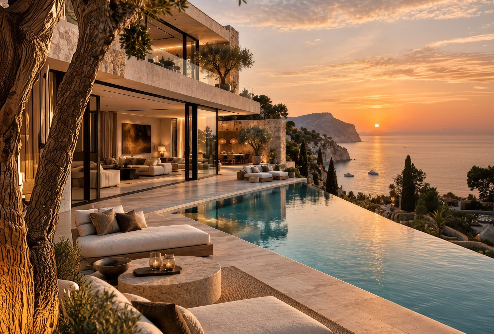
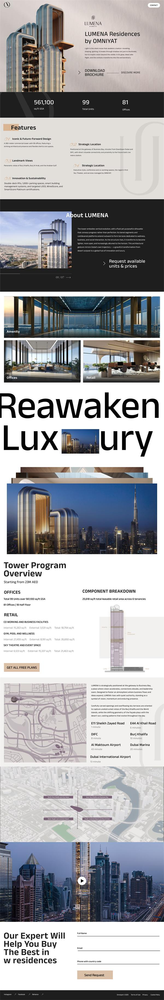
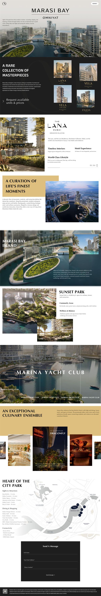
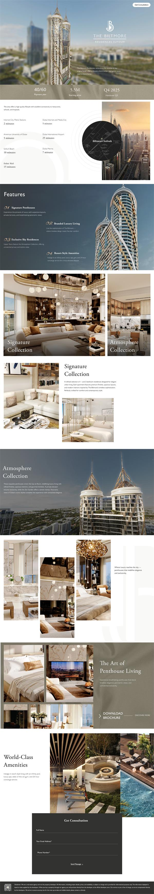
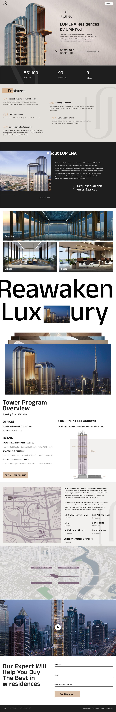
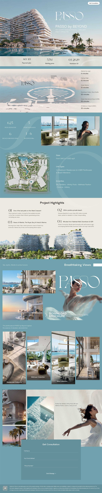
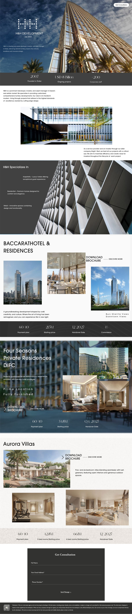

Landing pages · UI design
Luxury Real Estate
Overview
Designed to turn a first scroll into a viewing request.
A collection of high-converting landing pages for luxury developments in Dubai — including Palm Jumeirah, Downtown Dubai and Dubai Marina. Each page pairs editorial imagery with a clear visual hierarchy, sophisticated layouts and seamless calls to action, from brochure downloads to unit enquiries, so prospective buyers feel the premium from the very first scroll.
- The collection01
- Every page, in full02
- Built to convert03
The collection
Five developments, five personalities — one design language of generous imagery, refined serif typography and calm, confident spacing.



02 — Every page, in full
Scroll through the sites
Lumena Residences
A future-forward tower in Business Bay. The page leads with the key figures, then walks buyers through features, amenities and the tower programme before closing with a consultation form.
- 561,100 sq.ft GSA
- 99 units
- 81 offices
Marasi Bay
A rare collection of waterfront masterpieces. An editorial rhythm of image-led chapters introduces each residence, the Marina Yacht Club and an exceptional culinary ensemble.
- Waterfront
- Yacht club
- Dining & lifestyle
Passo by Beyond
Beachfront living on the West Crescent of Palm Jumeirah. Sweeping views, project highlights and a soft coastal palette lead naturally to brochure downloads and consultation requests.
- 625 residences
- 60/40 plan
- Q3 2029
The Biltmore Residences
Branded residences in Al Sufouh, presented like a hotel lookbook — the Signature and Atmosphere collections and penthouse living, each with a direct path to enquire.
- 40/60 plan
- From AED 5.5M
- Q4 2025
H&H Development
A developer portfolio that brings flagship projects — Baccarat Hotel & Residences, Four Seasons Private Residences DIFC and Aurora Villas — together in one confident brand story.
- Since 2007
- USD 8B ongoing
- 3 flagships



Built to convert
Beautiful pages are only half the brief. Every layout guides buyers towards one next step, without ever feeling like a sales pitch.
Clear visual hierarchy
The figures buyers ask for first — size, units, payment plan, handover — sit right under the hero, in large, quiet numerals.
Sophisticated layouts
Editorial grids mix full-bleed photography with offset image clusters, so long pages keep their rhythm and never feel repetitive.
Seamless calls to action
Brochure downloads and “request available units” links recur along the page, and every journey ends in a short, elegant consultation form.
Next project